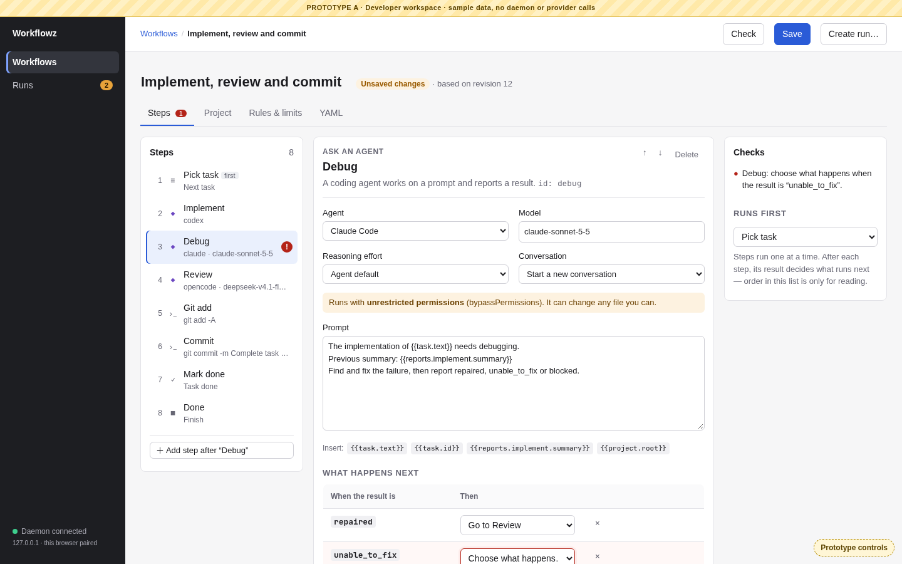

A
Developer workspace
Sidebar navigation and breadcrumbs. A three-pane editor (steps · selected step · checks) with Steps / Project / Rules & limits / YAML tabs. The run page shows a decision bar, then the history next to step details.
Good at
- Speed for repeat use; everything is one click away
- Scales to long workflows and long runs
- Feels like tools you already use (GitHub, Linear)
Costs
- Most on screen at once; tabs must be learned
- Branching is read from dropdowns, not seen